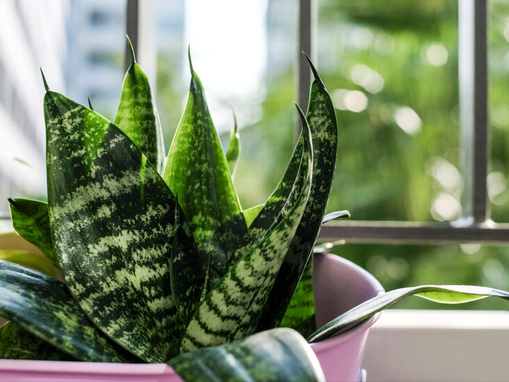
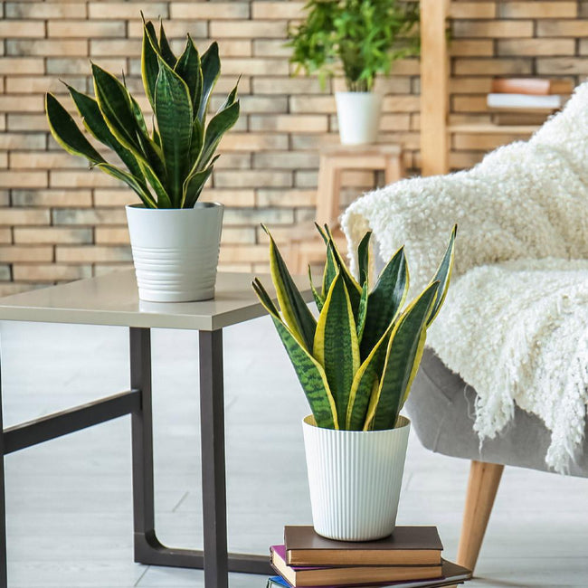
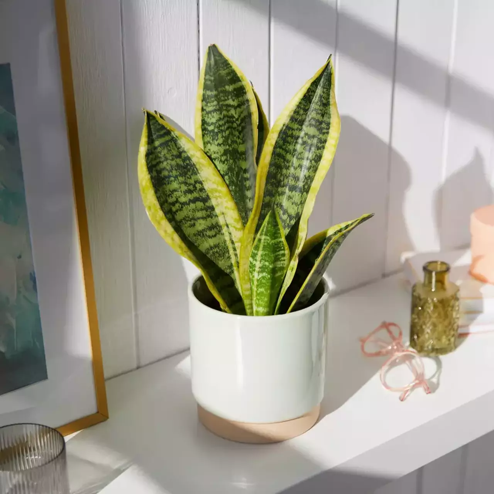

Snake Plant
Snake Plants (Sansevierias) are some of the toughest plants you can find. Whether indoors, in your garden or on your balcony, these spiky beauties can put up with almost anything. They’re easy to grow, but there are a few things you should know. Easy does it with the watering – this is essential to Snake Plant care. You want to be careful not to over do it because your plant will rot out. Always make sure the soil is almost completely dry before thoroughly watering again.
Even though Sansevierias prefer medium light (which is about 10′ away from the west or south window), they’ll also tolerate low light and high light. These plants don’t mind the dry or stale air in our homes and offices. They’ll also do well in bathrooms where the humidity tends to be much higher.
Snake Plants are easy-going with their soil nutrients requirements. Because root rot is one of its main issues that kill these plants, it is recommended to use a fast and well-draining soil to help prevent this.



These plants aren’t favored by everyone because of their strong, bold look and tough, pointed leaves. They’re definitely not the soft, “touchy-feely” kind of plants but certainly have character and present quite the striking silhouette.